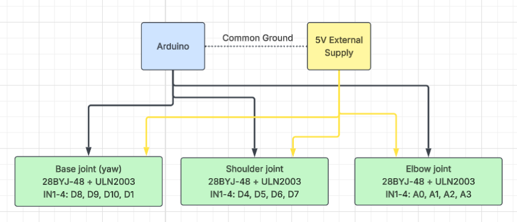

A 3-DOF Robot Arm Solved Using Cyclic Coordinate Descent
Designing a simple three-axis manipulator, then writing the inverse kinematics that lets you tell it where to go.
video
From Classroom to Project
After taking ME 5250 Robotic Mechanics and Controls at Northeastern University. I sought a way to apply the concepts from class to a personal project. I landed on designing a 3-DOF arm with the accompanying C++ code.
There were 3 goals in this 1 month project.
That means solving the inverse kinematics problem: given a target position for the gripper, find the joint configuration that puts it there. And, just as importantly, recognizing when no such configuration exists.
Mechanical Design
The arm is a serial manipulator: a rotating base and two primary links. A wrist gripper was not built into this original design but could be easily added with the addition of 2 hobby servo motors. Link lengths are the input the kinematics are built around, so they were fixed in CAD first and measured precisely. I opted for a very simple mechanical design for the purposes of this project here is a more robust design.
| Segment | Length | Joint | Travel |
|---|---|---|---|
| Base to shoulder | 3.5 cm | Base rotation | 0–180° |
| Upper arm (L1) | 7.0 cm | Shoulder | 80–180° |
| Forearm (L2) | 9.0 cm | Elbow | 50–180° |
Fully extended, that gives a maximum reach of roughly 39.5 cm from the base axis. The shoulder and elbow travel are deliberately narrower than the servos' full range — those limits come from where the links physically collide, and the software treats them as hard constraints rather than suggestions.
Solving the Kinematics
To solve the motion of my robot I chose Cyclic Coordinate Descent (CCD) over closed-form/analytic IK and Jacobian-based methods (transpose, pseudoinverse, damped least squares) for a few practical reasons:
- Limited matrix math required. Jacobian methods need matrix inverses recomputed every iteration. This is an expensive process on an Arduino Uno with no FPU. CCD only needs a cheap trig computation per joint per iteration. Proof I can solve an analytical IK is here :)
- No singularities to worry about. Jacobian methods struggle near singular configurations. CCD has no matrix to invert and keeps converging even in those poses. The trade-off is that it may converge slower, but it will never produce a velocity spike.
- Handles unreachable targets gracefully. A closed-form solution needs an explicit reachability check before it runs, and fails outright if the target is outside the arm's reach. CCD doesn't need that check — it just converges toward the closest point it can actually reach, so a slightly-off coordinate doesn't crash the solver mid-demo.
A closed-form 2-link solution is simpler and exact for this specific arm but it doesn't scale if I add a joint or change link lengths later, and it wouldn't demonstrate the kind of general, iterative solver used on arms with more DOF. CCD was the more representative choice for a portfolio piece.
Hardware Design
Here is the schematic I designed and followed to wire my robot.

Software
The Arduino sketch that reads a target position over serial and drives the three steppers via CCD:
/*
3-DOF Robotic Arm — CCD Inverse Kinematics
Hardware: 3x 28BYJ-48 stepper + ULN2003 driver board, Arduino Uno/Nano
Library required: AccelStepper (Library Manager -> "AccelStepper" by Mike McCauley)
Joint layout:
Joint 0 — Base yaw (solved analytically: atan2)
Joint 1 — Shoulder (solved with CCD, in the r-z plane)
Joint 2 — Elbow (solved with CCD, in the r-z plane)
Serial protocol: send "X Y Z\n" (millimeters) over Serial Monitor (115200 baud),
e.g. "100 50 60"
*/
#include <AccelStepper.h>
#include <math.h>
// ---------------- Stepper setup ----------------
// AccelStepper HALF4WIRE pin order is (pin1=IN1, pin2=IN3, pin3=IN2, pin4=IN4)
#define MOTOR_INTERFACE AccelStepper::HALF4WIRE
AccelStepper baseMotor (MOTOR_INTERFACE, 8, 10, 9, 11); // physical IN1..IN4 = 8,9,10,11
AccelStepper shoulderMotor(MOTOR_INTERFACE, 4, 6, 5, 7); // physical IN1..IN4 = 4,5,6,7
AccelStepper elbowMotor (MOTOR_INTERFACE, A0, A2, A1, A3); // physical IN1..IN4 = A0,A1,A2,A3
// 28BYJ-48 in half-step mode: commonly cited as 4096 steps/rev, true value is
// closer to ~4075.7 (gear ratio varies slightly by batch, ~63.68:1 or ~64:1).
// CALIBRATE: command exactly one full revolution and measure the real angle,
// then adjust this constant so 360 deg of travel matches the physical output shaft.
const float STEPS_PER_REV = 4096.0;
// ---------------- Arm geometry (mm) ----------------
const float L1 = 80.0; // shoulder pivot -> elbow pivot
const float L2 = 80.0; // elbow pivot -> end effector
const float BASE_HEIGHT = 40.0; // height of shoulder pivot above the base/world origin
// ---------------- Joint state (radians) ----------------
// theta1: shoulder angle measured from horizontal
// theta2: elbow angle measured relative to the shoulder link's direction
float theta1 = 0.0;
float theta2 = 0.0;
// Soft joint limits (radians) — set these to match what your printed housing
// can physically do before it collides with itself or the base.
const float THETA1_MIN = -1.57, THETA1_MAX = 1.57; // +/-90 deg
const float THETA2_MIN = -2.60, THETA2_MAX = 2.60; // ~+/-149 deg
void setup() {
Serial.begin(115200);
baseMotor.setMaxSpeed(500);
baseMotor.setAcceleration(250);
shoulderMotor.setMaxSpeed(500);
shoulderMotor.setAcceleration(250);
elbowMotor.setMaxSpeed(500);
elbowMotor.setAcceleration(250);
Serial.println(F("Ready. Send target as: X Y Z (mm), e.g. 100 50 60"));
Serial.println(F("Make sure the arm was manually zeroed (shoulder horizontal, elbow straight) before power-on."));
}
void loop() {
if (Serial.available()) {
float x = Serial.parseFloat();
float y = Serial.parseFloat();
float z = Serial.parseFloat();
// consume trailing newline
while (Serial.available() && Serial.peek() != '\n') Serial.read();
if (Serial.available()) Serial.read();
moveToXYZ(x, y, z);
}
// Non-blocking stepping — call run() as often as possible
baseMotor.run();
shoulderMotor.run();
elbowMotor.run();
}
// ---------------- Top-level IK ----------------
void moveToXYZ(float x, float y, float z) {
// 1) Base yaw is analytic: it just points the whole arm's plane at the target
float theta0 = atan2(y, x);
// 2) Project the target into that vertical plane
float r = sqrt(x * x + y * y);
float zPlane = z - BASE_HEIGHT;
// 3) Solve shoulder + elbow with CCD
solveCCD(r, zPlane);
// 4) Command all three motors
baseMotor.moveTo(radiansToSteps(theta0));
shoulderMotor.moveTo(radiansToSteps(theta1));
elbowMotor.moveTo(radiansToSteps(theta2));
Serial.print(F("theta0(deg)=")); Serial.print(degrees(theta0));
Serial.print(F(" theta1(deg)=")); Serial.print(degrees(theta1));
Serial.print(F(" theta2(deg)=")); Serial.println(degrees(theta2));
}
// ---------------- Cyclic Coordinate Descent (2-link planar chain) ----------------
// Solves for theta1 (shoulder) and theta2 (elbow) so the end effector reaches
// (targetR, targetZ) as closely as the chain allows.
void solveCCD(float targetR, float targetZ) {
const int MAX_ITER = 50;
const float TOLERANCE = 0.5; // mm
for (int iter = 0; iter < MAX_ITER; iter++) {
// Forward kinematics with current joint angles
float elbowR = L1 * cos(theta1);
float elbowZ = L1 * sin(theta1);
float endR = elbowR + L2 * cos(theta1 + theta2);
float endZ = elbowZ + L2 * sin(theta1 + theta2);
float errR = targetR - endR;
float errZ = targetZ - endZ;
if (sqrt(errR * errR + errZ * errZ) < TOLERANCE) break;
// --- Work from the tip of the chain back toward the root ---
// Elbow joint: pivot is the elbow itself
float toEndR = endR - elbowR, toEndZ = endZ - elbowZ;
float toTgtR = targetR - elbowR, toTgtZ = targetZ - elbowZ;
float deltaElbow = signedAngleBetween(toEndR, toEndZ, toTgtR, toTgtZ);
theta2 = clampf(theta2 + deltaElbow, THETA2_MIN, THETA2_MAX);
// Recompute end effector now that the elbow moved
elbowR = L1 * cos(theta1);
elbowZ = L1 * sin(theta1);
endR = elbowR + L2 * cos(theta1 + theta2);
endZ = elbowZ + L2 * sin(theta1 + theta2);
// Shoulder joint: pivot is the base of the chain (r=0, z=0 in this plane)
toEndR = endR; toEndZ = endZ;
toTgtR = targetR; toTgtZ = targetZ;
float deltaShoulder = signedAngleBetween(toEndR, toEndZ, toTgtR, toTgtZ);
theta1 = clampf(theta1 + deltaShoulder, THETA1_MIN, THETA1_MAX);
}
}
// Signed angle (radians) you'd rotate vector A by to align it with vector B
float signedAngleBetween(float ax, float az, float bx, float bz) {
float cross = ax * bz - az * bx;
float dot = ax * bx + az * bz;
return atan2(cross, dot);
}
float clampf(float v, float lo, float hi) {
if (v < lo) return lo;
if (v > hi) return hi;
return v;
}
long radiansToSteps(float rad) {
return (long)(rad / (2.0 * PI) * STEPS_PER_REV);
}Refusing Bad Commands
The most useful thing the controller does is decline to move.
A solution that is mathematically valid can still be mechanically impossible. The solver runs three reachability checks before it computes anything, and a full joint-limit sweep before it returns:
Out of reach
Target further than L1 + L2 from the shoulder — reports the actual maximum reach so the operator knows how far to back off.
Too close to the base
Target inside |L1 − L2|, the dead zone the two links cannot fold tightly enough to enter.
Wrist overshoot
Effective reach goes negative — the horizontal wrist would extend past the target rather than up to it.
Joint limit violation
Every joint checked against its mechanical travel. The error names each offending joint, its computed angle, and its permitted range.
Critically, a violation aborts the entire move rather than clamping the offending
joint. A clamped joint produces a pose that is silently wrong — the gripper ends up
somewhere other than where it was told to go, which is far more dangerous than a
refusal. The solver returns a (result, error) pair where exactly one is
ever populated, so a caller cannot accidentally use a failed result.
The Control Application
CAD designs were rendered in Blender then imported into Unity with kinematics to form a desktop application that talks to the arm's microcontroller over serial:
blender
unity
Calculate and send are two separate buttons. The operator sees the joint angles the solver produced and can sanity-check them against the physical arm before anything actually moves. One extra click costs nothing; a surprise full-speed move into the table costs a rebuild.
What I Took From It
Deriving the kinematics by hand rather than pulling in a robotics library meant I had to understand exactly why each term exists — and that understanding is what made the failure modes obvious.
It also reinforced something the assistive-device work had already taught me: the hardest part of controlling a physical system isn't the happy path. It's the boundary — where the math stops describing something the hardware can actually do, and the software has to notice before the mechanism does.